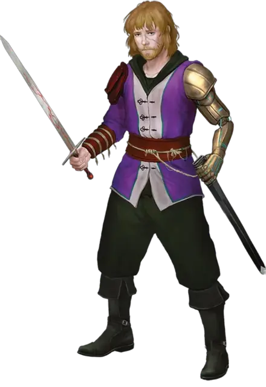

Ирван (3-го уровня)
Irvan Wastewalker (Tier 3)
Средний Гуманоид (Человек), хаотично-нейтральный, именной НИП

Класс Доспеха 17 (проклёпанный доспех)
Хиты 123 (19к8 + 38)
Скорость 40 футов, плавая 40 футов (см. особое снаряжение)
| мод | спас | ||
|---|---|---|---|
| СИЛ | 10 | +0 | +0 |
| ЛОВ | 20 | +5 | +8 |
| ТЕЛ | 14 | +2 | +5 |
| мод | спас | ||
|---|---|---|---|
| ИНТ | 16 | +3 | +3 |
| МДР | 16 | +3 | +3 |
| ХАР | 16 | +3 | +3 |
Навыки Акробатика +8, Выживание +6, Обман +9, Скрытность +11
Чувства пассивное Восприятие 13
Языки Общий, Гоблинский, Орочий
Опасность 8 (3900 опыта)
Бонус мастерства +3
Особенности
Стойкость (Перезаряжается после короткого или продолжительного отдыха). Если Ирван получает урон, уменьшающий хиты до 0, он совершает спасбросок Телосложения Сл 5 + полученный урон. При успехе хиты Ирвана опускаются всего лишь до 1.
Особое снаряжение. Ирван носит перчатки плавания и лазания [gloves of swimming and climbing] и сражается коротким руидиевым мечом. Если Ирван выбрасывает 1 при броске атаки, совершаемой с помощью этого оружия, он должен совершить спасбросок Харизмы Сл 20, при провале получая 1 степень истощения.
Кроме того, одна рука Ирвана является магическим протезом. Пока он прикреплён к нему, он функционирует так же, как и часть тела, которую он заменяет. Ирван может действием прикрепить или отсоединить руку, и никто другой не может ее отсоединить.
Действия
Мультиатака. Ирван совершает одну атаку Кинжалом и две атаки Коротким руидиевым мечом.
Кинжал. . Рукопашная или Дальнобойная атака оружием: +8 к попаданию, досягаемость 5 футов или дистанция 20/60 футов, одна цель. Попадание: 7 (1к4 + 5) колющего урона плюс 17 (5к6) урона ядом.
Короткий руидиевый меч. Рукопашная атака оружием: +8 к попаданию, досягаемость 5 футов или дистанция 20/60 футов, одна цель. Попадание: 8 (1к6 + 5) колющего урона плюс 7 (2к6) урона психической энергией.
Описание
Имя Странник Пустошей вызывает страх на равнинах Жорхаса, как название клана кочевников Жорхаса. Ирван, для своих друзей — Ирв, родился в этом клане, но он ненавидит это имя. Он оставил свою семью, когда был подростком, отправившись в одиночку через пустоши и добравшись до города Асариус. Несмотря на то, что "Город зверей" славится опасностями, Ирв чувствовал себя там как дома так, как никогда не чувствовал себя со своим кланом.
У него репутация тусовщика, который может опрокинуть дюжину напитков за вечер и при этом танцевать с энергией и элегантностью архифеи. Ирв молод — всего несколько недель назад ему исполнилось девятнадцать, — и он втайне стыдится своей клочковатой бороды и тощего человеческого тела. С этим чувством связана еще большая тайна: в другой жизни его подвергли перерождению. Акт перерождения — это священный ритуал династии Крин, возрождение через мистическую силу Люксона. У Ирвана есть воспоминания о его прошлой жизни в качестве багбира Ден Хитенос, и он надеется доказать себе, что может совершать великие дела без помощи своей могущественной "семьи" из династии Крин.
Он познакомился с Айо и её друзьями, когда отправился в Джигау, чтобы испытать себя на прочность и мастерство. Он остаётся с группой отчасти потому, что ему интересно, в какие приключения они попадут, а также потому, что он влюблен в нового члена группы, дроу-волшебника по имени Галсариад.
Примеры высказываний в бою
"Хах, это был хороший удар, не так ли?" "Давай, давай! Смотри на меня!" "Могу я пригласить вас на этот танец? Нет?"
Уровни Соперников
По мере того, как персонажи повышают свой уровень и получают новое снаряжение в ходе этого приключения, соперники набирают силу. Каждый соперник представлен тремя блоками характеристик.
СОПЕРНИКИ 3-го уровня
Собственное приключение вынудило соперников 3-го уровня принимать решения, иногда из-за суровой необходимости, которые они, возможно, не приняли бы раньше. Все пятеро страдают от руидиевой порчи. Когда персонажи сталкиваются с ними, предположите, что соперники сняли с себя все степени истощения с помощью отдыха или магии, но другие эффекты руидиевой порчи остаются.
Если вместо этого вы хотите ослабить соперников, чтобы сделать их менее опасными для физической угрозы или усилить опасность руидиевой порчи, вы можете дать одному или нескольким из соперников по 4 степени истощения на каждого. В этом случае вам нужно будет отслеживать уровень истощения каждого соперника и соответствующие эффекты состояния.
Полезная магия. Чтобы облегчить их путешествие, Галсариад выучил заклинание подводное дыхание [water breathing]. Кроме того, все соперники приобрели руидиевое снаряжение для защиты от воздействия подводного давления.
Протез Ирвана. В следствии одного несчастного случая, который произошёл, когда соперники были отдельно от персонажей, Ирван Бродяга пустоши потерял руку и получил магический протез. Этот магический предмет не работает ни на ком другом.